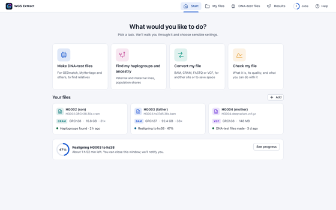
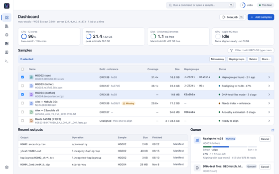
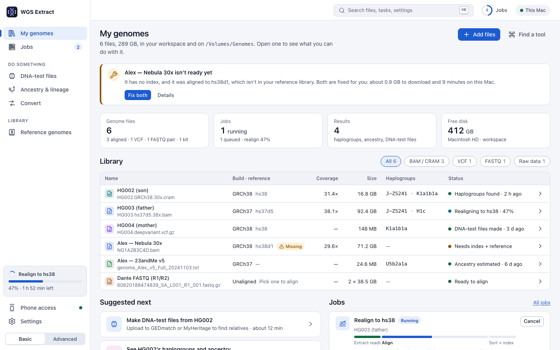

Same product, same data, different shape. They share the design system, so compare structure, not colours.
AGuided
Task first, one step at a time

Opens on “What would you like to do?” with four big tasks; each is a wizard with plain-language steps. Top navigation, no sidebar.
Good: nothing to learn for a first-timer. Weak: slow for repeat use; advanced options have nowhere natural to live.
BConsole
Dashboard, command palette, batch

A dense dashboard: machine status, a selectable sample table with bulk actions, the queue and a live log. Every operation is a form with all its options and the command it runs.
Good: fast and complete for experts; batch work. Weak: intimidating for the many people who only want their kit files.
CGenome hub Recommended
Your files are home; tasks are one click from each

The library of your genomes is home. Each file shows what it is, what was found, and what you can do next. Tasks are short single pages with good defaults; Advanced adds depth to the same pages instead of a second app.
Good: fits both groups; jobs, results and fixes all hang off the file. Weak: more screens to build than A.